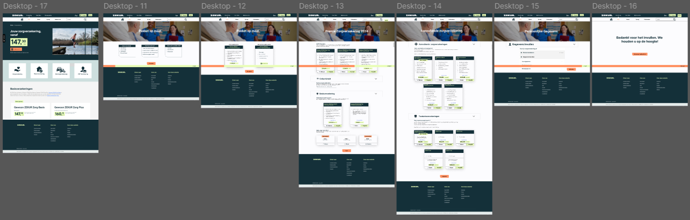
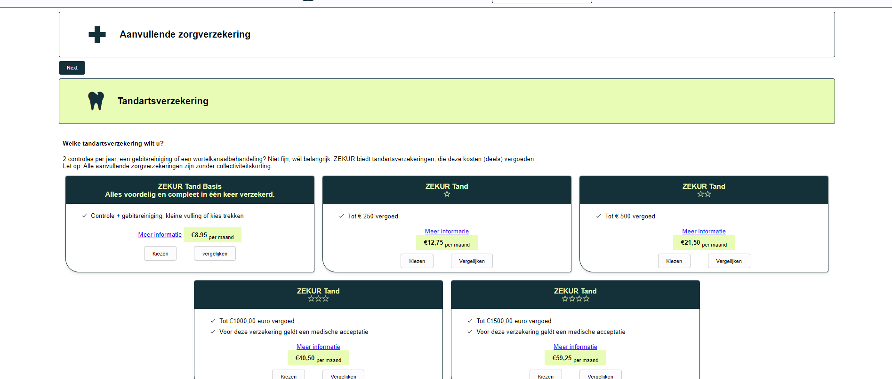
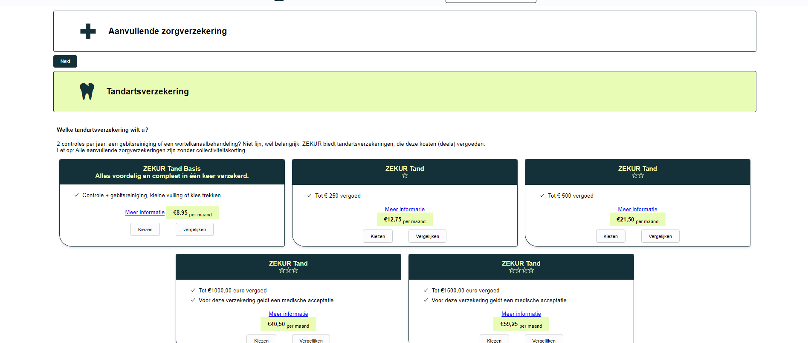

Development
Dit is een vervolg op project 2 “Fix that UI”. In project 3 moeten we de website die we hiervoor hebben ontworpen, de “Zekur” verzekering aansluiting proces, programmeren. Hiervoor is ons groep in twee gesplits. Ik heb samen met Sara en Jonas gewerkt. Vorige project had Jonas alleen gewerkt waardoor hij andere prototypes heeft gemaakt. Wij hebben als groepje gekeken naar beide prototypes. We hebben de beste elementen uit beide gepakt en deze samengevoegd. Dit is het uiteindelijke flow prototype geworden.
Wij hebben aan het begin van het project een planning gemaakt voor ons zelf en zo hebben we wekelijks 1 tot 3 vergaderingen gehad. Elke keer hebben we taken verdeeld en de volgende keer deze laten zien. Jonas heeft mij uitgelegd hoe ik code moet pushen en pullen op Git. Op het begin snapte ik dit nog niet helemaal, maar ik heb op school ook hulp gevraagd aan andere studenten. Nu weet ik precies wat ik allemaal moet doen om mijn code te delen.

 
